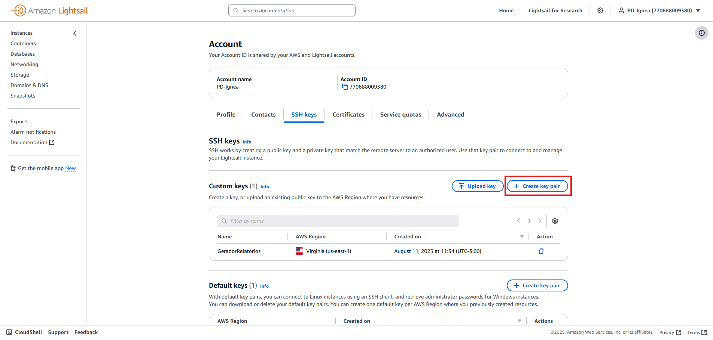
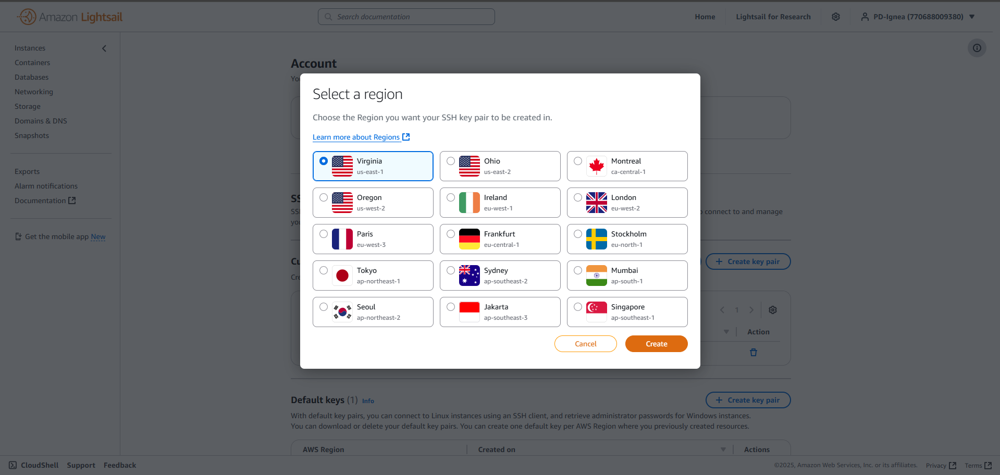

AWS (Lightsail) — Guia de Uso da Plataforma¶
Guia para operar a infraestrutura na AWS (Lightsail).
Conta, Região e Escopo¶
Conta & credenciais: disponíveis no Discord.
Região padrão: quando possível, Brasil (sa-east-1); caso não, N. Virginia (us-east-1, Zone A / us-east-1a) por ser o segundo mais próximo.
Serviço utilizado: Lightsail (compute + banco gerenciado).
Recursos em uso (hoje)¶
Recurso |
Tipo |
Nome/Identificação |
Região/AZ |
IP |
|---|---|---|---|---|
Instância de aplicação |
Lightsail (Linux) |
GeradorRelatoriosV2 |
us-east-1a |
34.205.142.142 (IP estático) |
Banco de dados |
Lightsail Managed DB |
GeradorRelatoriosDatabase |
us-east-1a |
Endereço/porta via |
Aplicação: 2 contêineres Docker — backend + servidor de estáticos e LibreOffice (lo-runner).
Banco: Lightsail Managed Database; informações de conexão em.envdo Gerador de Relatórios no Discord.
Acesso¶
Console AWS¶
Acesse o Console AWS com as credenciais do Discord como root.
Abra Lightsail → Instâncias → GeradorRelatoriosV2.
SSH na Instância¶
Usuário:
ubuntuAutenticação: chave
.pem(public key) do Lightsail (armazenada na conta/região)Para mais informações sobre a public key veja Publickey.
Comando (exemplo):
ssh -i /caminho/sua-chave-lightsail.pem ubuntu@34.205.142.142Diretório do app:
/home/ubuntu/app
Se necessário, use o browser-based SSH do próprio Lightsail (botão Connect na página da instância).
Uso e Deploy¶
Para informações de uso, deploy e um exemplo de como foi feito esse procesos até agora, veja a documentação do Gerador de Relatórios.
Custos — atenção¶
Warning
Monitore custos continuamente.
Instâncias Lightsail e bancos gerenciados cobram por hora caso se ultrapasse os recursos contratados no plano e podem crescer com armazenamento, transferência de dados e snapshots.
Acompanhamento: verificar periodicamente o custo mensal e previsão no Console AWS.
Dimensionamento: valide se o plano da instância e o tamanho do banco estão adequados à demanda.
Dados/egresso: altas transferências podem elevar custos; monitore tráfego e políticas de retenção de logs.
Snapshots: gere com parcimônia e apague os desnecessários.
Informações:
Já existem alertas de custo (Budget) estabelecidos, mas sua manutenção e verificação devem ser mantidos e revisados.
Diagrama simples (visão atual)¶
Destaca-se os serviços em uso atual na AWS lightsail.
flowchart TD
A[Dev local] --> B[Build & Testcompose.prod.cloud.yaml]
B --> C[Docker Hub backend-vX, lo-runner-vX]
C --> D[Lightsail GeradorRelatoriosV2]
D --> E[home/ubuntu/app compose.cloud.yaml]
E --> F[Containers: backend+static, lo-runner]
D --> G[Lightsail DB: .env no Discord]
PublicKey¶
Para acessar uma instância da AWS Lightsail via SSH ou enviar arquivos via SCP é preciso criar uma publickey. Essa é a chave que dá acesso a máquina, uma vez que o lightsail não define uma senha pra SSH.
Para criar uma publickey acesse:
https://lightsail.aws.amazon.com/ls/webapp/account/keys .
Crie uma par de chave de acesso 
Selecione a região da instância 
Defina um nome para sua chave e crie

Faça um download da chave

Você irá baixar um arquivo
.pem.
Você deve deixá-lo em um lugar de fácil acesso. O caminho padrão (tanto no linux-wsl quanto no windows) é ~/.ssh/<nome_da_chave>.pem, o recomendado é colocá-la nesse lugar.
Quando for utilizar ssh ou scp faça da seguinte forma:
ssh -i ~/.ssh/<nome_da_chave>.pem <ip>
scp -i ~/.ssh/<nome_da_chave>.pem <arquivo1> <arquivo2>